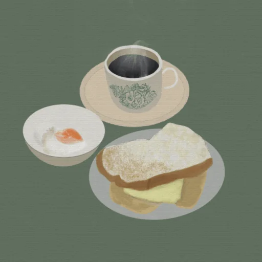

L’art de pâtissier se distingue de celui du cuisinier par le petit nombre des ingrédients nécessaires a la confection d’autant de chefs-d’œuvre et aussi pas extrême précision de leur dosage et de leur cuisson
l’un des plus avantages de travailler comme pâtissier la liberté Creative. Ce métier permet d’exprimer son art a travers les saveurs, les couleurs et les textures, en créant des gâteaux, desserts et autres produits sucrés qui sont non seulement délicieux mais aussi visuellement attractifs.
Les premiers gâteaux étaient de simples mélanges de farine, lait et miel. Ils étaient desséchés sur des pierres chauffées au soleil, il y a de ça 7000 ans. On trouve le premier nom donné a un gâteau chez les grecs « obélias » qui signifie « offrande ».
l’histoire de la pâtisserie est intimée liée a celle des produits de base. La farine par exemple était déjà utilisés dès l’âge de pierre, c’est pour cela que l’on y trouve les premières galettes. Miels et fromage viendront étoffes en Grèce Antique les premiers mets sucrés…c’est a cette époque que le gâteaux au fromage fait donc son apparition.
la préparations et l’élaboration des pâtissiers : crèmes, sauces coulis, glaces, gâteaux, biscuits…,La sélections des ingrédients et leur dosage,La cuisson des gâteaux.
